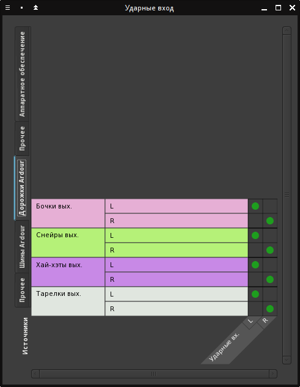

Подготовка партии ударных (drumkv1)
Для начала загрузим из интернета несколько сэмплов ударных. В сети можно найти несколько источников для скачиваания бесплатных сэмплов. По качеству они обычно на высоте, потому что часто являются демо-сэмплами больших библиотек. Для ударных будем использовать Tri Sample Set, состоящий из пяти частей, которые можно скачать по этой ссылке: http://trisamples.com/tri-samples-the-sample-set-vol-1/ (внизу ссылка на Next Post приведёт к следующему тому). Из всех архивов сэмплы можно сохранить в одну папку, названия не повторяются.
В данном примере для всех ударных мы будем использовать только одну дорожку, но обрабатываться они будут раздельно внутри плагина Carla-Patchbay. У этого плагина есть версия с 16 и 32 выходами, которые, в принципе, затем можно было развести по отдельным шинам для разных барабанов, но вряд ли в этом есть серьёзная необходимость.
Добавим MIDI-дорожку с плагином Carla-Patchbay, который мы будем заполнять синтезаторами ударных и их обработкой.
Отправим аудиовыход этой дорожки на шину Ударные, используя обратную матрицу маршрутизации. Нажав на кнопку выходов линейки микшера Ударные MIDI (над кнопкой Коментарии), используем пункт Матрица маршрутизации. Здесь выходы дорожки подключаем ко входу шины. Третий канал (1) предназначен для MIDI-данных. Перейдём на таб Шины Ardour и подключимся к ней, как показано на рисунке.

Теперь, дважды кликнем на названии плагина Carla Patchbay в линейке микшера. Воспользовавшись прокруткой, в табе Patchbay где-то возле центра найдем MIDI-вход и аудиовыходы плагина, к которым будем подключать добавляемые синтезаторы ударных.
Нажав кнопку "Add Plugin", найдём драм-семплер drumkv1, и добавим его. Синтезатор предоставляет широкие возможности по модификации звука сэмпла, хотя и не поддерживает множественные слои.
Аудиовыход у него только один, поэтому создадим ещё три экземпляра, чтобы раздельно обрабатывать бочки, снейры, хай-хэты и тарелки. Для этого кликнем на добавленном плагине правой кнопкой и выберем Clone из контекстного меню. Выходы со всех синтезаторов направим на выход Carla, а к их MIDI-входам подключим MIDI-вход Carla, как показано на рисунке. Если созданный плагин не виден, нужно прокрутить окно - он где-то рядом.

Плагины обработки потом можно будет вставлять вместо прямого соединения между аудиовыходом каждого синтезатора и аудиовыходом Carla. Переключимся в режим стойки (таб Rack) и дадим нашим синтезаторам более конкретные названия (пункт Rename в контекстном меню).

Сохраним сессию Ardour и немного отвлечемся на подключение этой программы к входам и выходам комнаты Claudia. Если это окно было закрыто, можно вызвать его из системного лотка, кликнув по красной кнопке с нотой (LADISH Frontend). В окне комнаты Claudia Пульт нужно соединить MIDI-вход комнаты со входом дорожки ударных, а аудиовыходы Ardour направить на выоды комнаты, как на рисунке:

- выходы от шины Мастер направлены на основной левый и правый выход комнаты;
- выходы audiotiner и Click направлены на мониторный выход комнаты;
- MIDI-вход комнаты соединён с MIDI-входом дорожки Ударные MIDI.
Кроме того, показаны соединения, которые были сделаны внутри Ardour. Их из Claudia лучше не трогать, и все внутренние соединения Ardour производить и изменять только внутри Ardour.
В диалоге выбора сэмплов ударных drumkv1, к сожалению, нельзя предварительно прослушивать звук. Зато в Ardour есть полезный диалог выбора аудиофайлов с предварительным прослушиванием по наведению. Вызывается он по Ctrl+I на шине или аудидорожке. Затем найденный файл можно загрузить в drumkv1 (для вызова интерфейса синтезатора из стойки Carla нужно кликнуть на шестерёнке рядом с кнопкой отключения в левом верхнем углу). Ещё сэмплы можно прослушивать в Dolphin и перетаскивать их оттуда прямо в drumkv1.
Для начала для синтезатора Kicks найдём и загрузим две бочки: Kick 006 - Little Room на GM-позицию Acoustic Bass Drum и Kick 008 - Lunar на GM-позицию Bass Drum 1. Сохраним пресет, как Kicks и закроем окно синтезатора.

Проверим звук, нажав соответствующие клавиши на MIDI-клавиатуре. Если звука нет, самое время проверить соединения, в студии, комнатах и на шинах Ardour. Если звук есть, проект Claudia также можно сохранить.
Для ударных традиционно используется 10-й канал MIDI, так что будем выбирать его во всех редактируемых синтезаторах в поле Out.

Для Snares загружаем следующие сэмплы:
| GM-позиция |
Имя файла |
| 37 - Side Stick |
Snare 010 - Notched Combo |
| 38 - Acoustic Snare |
Snare 026 - Cloud - TRI |
| 39 - Hand Clap |
Clap 005 - Elements |
| 40 - Electric Snare |
Snare 022 - Crunkier |
Звуки для Hats:
| GM-позиция |
Имя файла |
| 42 - Closed Hi-Hat |
Hihat 003 - Traditional Chop |
| 44 - Pedal Hi-Hat |
HiHat 004 - Roomy Pedal |
| 46 - Open Hi-Hat |
HiHat Open 0015 - Deadweight |
Для каждого элемента устанавливаем группу 10, чтобы при проигрывании они подрезали друг друга и не звучали одновременно.

Наконец, сэмплы для Cymbals:
| GM-позиция |
Имя файла |
| 49 - Crash Cymbal 1 |
Crash 002 - Milo |
| 51 - Ride Cymbal 1 |
Ride 001 - Like That |
| 52 - Chinese Cymbal |
Crash 002 - Mindenergy |
| 53 - Ride Bell |
Ride 002 - Lil Baby |
Для тарелок имеет смысл увеличить значения Level 2 и Decay 2, чтобы они звучали долго и красиво.

Наш начальный драмкит готов.